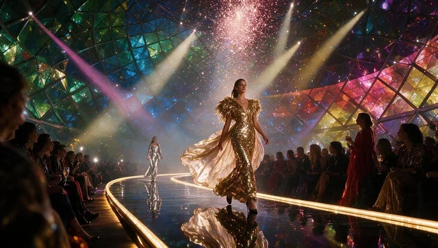
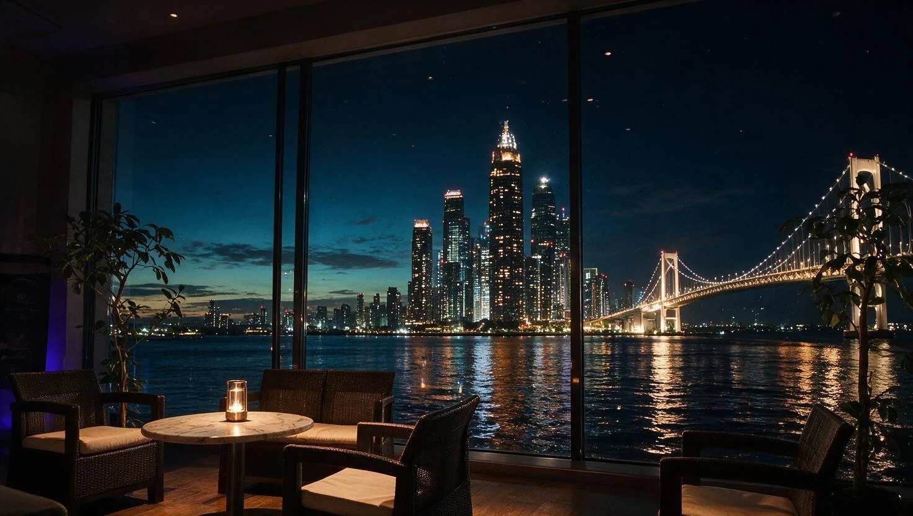

01 / A PLACE WITH POSSIBILITY
特別な景色を、
集まる理由に。
海を望むロケーション。
ゲストを迎える、印象的な空間。
THE JEWELRYは、大阪湾に面したイベント施設です。
展示会、ブランドイベント、レセプション。
思い描く企画に合わせて、
この場所の使い方をご相談いただけます。
A BEAUTIFUL PLACE TO BRING PEOPLE TOGETHER.
心に残る一日には、
心ひかれる場所がある。
 BLUE HOUR, OSAKA BAY
BLUE HOUR, OSAKA BAY
YOUR NEXT OCCASION.01 / A PLACE WITH POSSIBILITY
海を望むロケーション。
ゲストを迎える、印象的な空間。
THE JEWELRYは、大阪湾に面したイベント施設です。
展示会、ブランドイベント、レセプション。
思い描く企画に合わせて、
この場所の使い方をご相談いただけます。
02 / THE ART OF THE OCCASION

FROM THE FIRST HELLO TO THE LAST TOAST.
大阪市住之江区南港北2-5-20
コスモスクエア駅・トレードセンター前駅から徒歩約10分。
催事・展示の開催に合わせてご来場いただけます。
開催日時や入場方法は、各主催者の案内をご確認ください。
LET’S PLAN YOUR OCCASION.
企画のご相談から、会場見学まで。
日程や内容が未定の段階でも、お気軽にお問い合わせください。